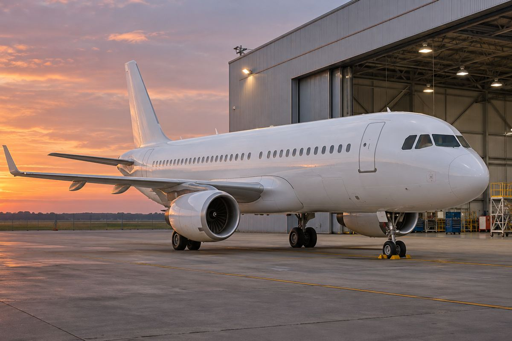

항공 / EXPLAINED
플라이나스 A320ceo 마지막 4대 퇴역…새 발표 기준 전체 66대
11월 9일 A320neo 두 대 인수와 구형 퇴역을 함께 알렸다. 공식 소개 페이지에는 이전 68대 집계가 남아 있다.

사우디아라비아 저비용 항공사 플라이나스는 11월 9일 A320neo 두 대를 인수하고 마지막 A320ceo 네 대의 퇴역을 마쳤다고 발표했다. 새 공지는 A320neo 64대와 광동체 A330 두 대로 전체 기재를 66대라고 설명한다. 인수와 퇴역의 개별 실행 날짜는 따로 제시하지 않았다. 이번 기사는 공지가 설명한 완료 상태를 기준으로 작성했으며 두 대의 첫 상업 운항 노선은 확인되지 않았다.
플라이나스는 사우디를 기반으로 국내선과 국제선을 운영하는 항공사다. A320은 통로 하나의 객실을 갖는 에어버스 항공기 계열이다. ceo는 기존 엔진 선택형, neo는 새 엔진 선택형을 가리키는 명칭으로, 같은 A320 계열 안에서도 엔진과 관련 설계가 다르다. 항공사는 연료와 소음 성능 개선을 기재 교체 이유로 설명한다. 단, 개별 비행편의 연료 절감률은 운항거리와 탑재량 등 조건에 따라 달라져 이번 발표만으로 계산하기 어렵다.
새 비행기가 들어와도 총기재는 줄 수 있다
이전 공식 기재 소개에는 총 68대, 그중 A320neo 62대와 A320ceo 4대, A330 2대라는 숫자가 남아 있다. 이 수치에 새 neo 두 대를 더하고 ceo 네 대를 빼면 66대가 된다. 서로 다른 시점의 수치를 비교할 때 인수만 반영하고 퇴역을 놓치면 실제 기재 수와 달라진다. 소개 페이지의 68대와 새 발표의 66대는 숫자가 충돌해 보이지만, 구성 변화를 함께 읽으면 설명이 가능하다.
항공사는 새 기재가 2026년 초 도입한 신세대 객실군의 일부라고 밝혔다. 객실 경험은 엔진 이름만으로 정해지지 않는다. 같은 neo라도 좌석 배치, 기내 엔터테인먼트 방식과 운항 배정은 항공사 선택에 달려 있다. 독자가 특정 좌석 기능을 기대한다면 실제 편의 좌석표와 서비스 안내가 필요하다. 기재 인수 소식은 항공사에 비행기가 들어왔다는 단계이고, 모든 노선에 새 객실이 한꺼번에 제공된다는 일정표는 아니다.
A330 두 대가 남는다는 점도 전체 구성을 읽을 때 중요하다. 새 공지는 좁은 동체의 A320 계열이 neo로 바뀌었다고 설명하지만 전체 기단에는 별도의 광동체가 포함된다. 광동체는 일반적으로 통로 두 줄을 두는 큰 객실 형태다. ‘모두 neo’라는 문구를 항공사 전체의 모든 기종으로 넓히면 A330을 빠뜨리게 된다. 이번 변화의 범위는 A320ceo 퇴역 완료와 A320neo 중심의 단통로 기단이다.
기재 집계는 보유·운영 항공기 목록을 보는 자료이고, 오늘 운항에 투입할 수 있는 수를 바로 보여 주는 것은 아니다. 정비 중인 기체가 있으면 시간표를 수행하는 방식이 달라질 수 있다. 새 발표는 이들 기체의 정비 상태나 일별 투입 시간을 제시하지 않았다.
편집부의 해석으로는 기단 구성을 단순화하면 정비나 운용 계획을 맞출 여지가 있지만, 이번 자료에는 비용 절감의 실측값이 없다. 또한 총기재가 두 대 줄었다는 숫자만으로 좌석 공급이나 노선 감편을 단정할 수 없다. 기체별 좌석 수와 활용 시간, 정비 일정도 공급에 영향을 준다. 구체적인 운항 변화는 별도 시간표에서 확인해야 한다. 오래된 소개 수치보다 날짜가 있는 새 공지의 범위와 구성을 함께 읽는 것이 이번 소식을 이해하는 출발점이다.